Le osservazioni sono l'elemento atomico della scheda. Esse sono costituite dalla coppia pianta-parassita e da una serie di informazioni ausiliarie. Inizzializzata una nuova scheda, è possibile accedere al tab della compilazione delle osservazioni (Dettaglio Scheda), utilizzando la prima icona della colonna delle azioni nell'elenco delle schede.
Il tab di dettaglio della scheda si presenta diviso in due parti:
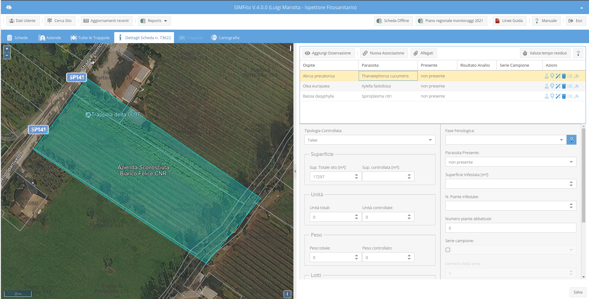
L'area di destra, nel tab di dettaglio della scheda, si presenta, come già anticipato, divisa in due parti: la parte superiore costituita dalla lista delle osservazioni ed un form inferiore per la visualizzazione e l'editazione dei dettagli, dell'osservazione. La parte superiore della lista presenta una toolbar con 5 bottoni che consentono di:
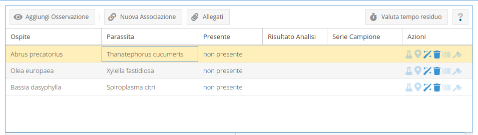
Grazie al bottone Aggiungi Osservazione della toolbar delle osservazioni, è possibile accedere alla finstra Aggiungi Osservazione che presenta due tab con un menu a tendina, ciascuno, dal quale è possibile scegliere una pianta e, successivamente, uno o più parassiti ad essa collegati. La differenza tra i due tab stà nel fatto che le piante ed i relativi collegamenti ai parassiti vengono presi da tre base di dati differenti:
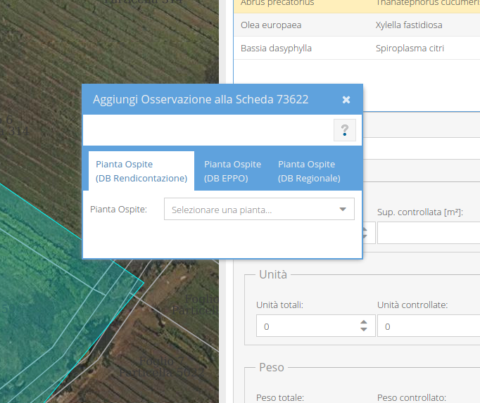
Il menu a tendina, presente nella finestra di cui sopra, consente la selezione della pianta o aprendo il menu e navigandolo come un normale menu a tendina oppure cominciando a scrivere il nome della pianta nel box. In questo ultimo caso, dopo aver scritto almeno 4 caratteri, aspettando qualche secondo compariranno tutte le piante, presenti nel database, nel cui nome, italiano o scientifico, è presente il frammento digitato.
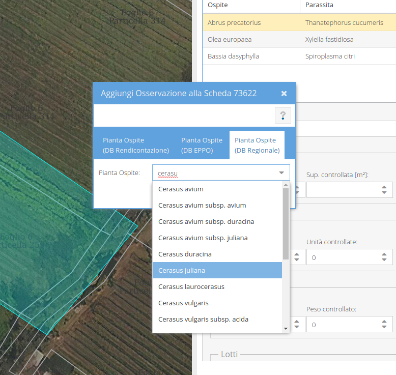
Alla selezione della pianta si apre una nuova finestra nella quale compare una lista di tutti i parassiti collegati. Da questa finestra è possibile selezionare una o più voci, utilizzando i chekbox e premendo sul pulsante Usa selezionati.
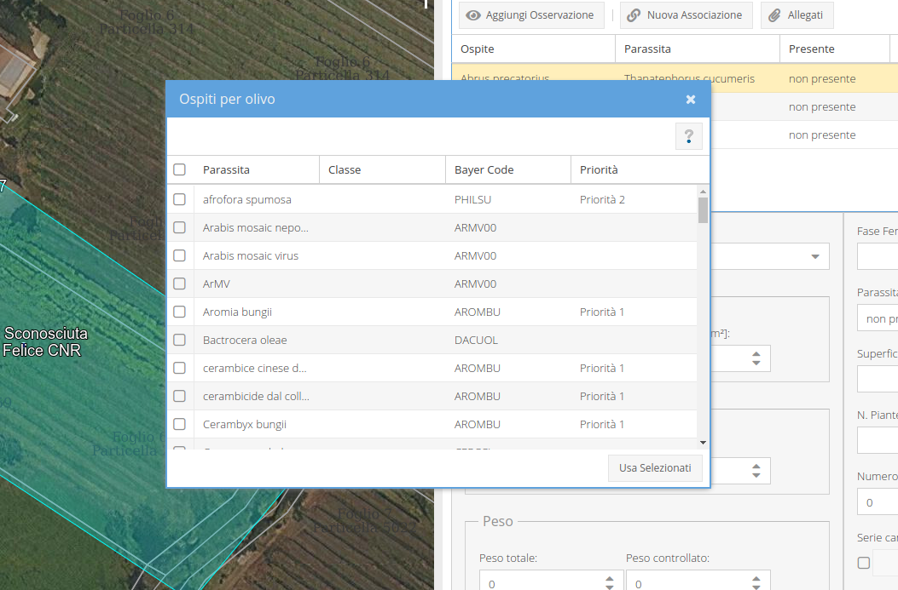
Selezionati pianta e parassiti, la lista delle osservazioni si popola automaticamente. Le righe vengono visualizzate di colore rosso fin quando non sono state inserite tutte le informazioni obbligatorie e, quindi, completate.
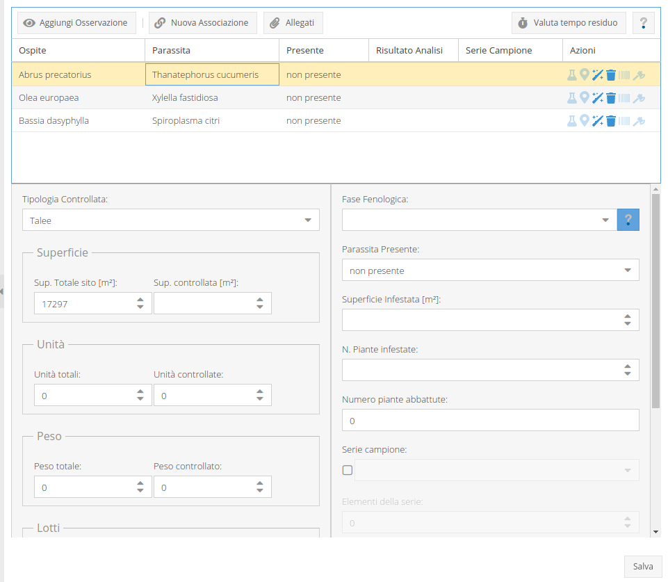
Per completare un'osservazione si deve utilizzare il form sottostante: selezionando una riga dall'elenco; alcuni campi, nel form sottostante, vengono popolati automaticamente. Completate tutte le informazioni necessarie, le modifiche possono essere salvate utilizzando il tasto Salva in fondo a sinistra del form. Se i campi obbligatori non sono stati completati o se mancasse qualche informazione, alla pressione del stato Salva si evidenzieranno in rosso i campi obbligatori o un messaggio informerà l'utente del dato mancante.
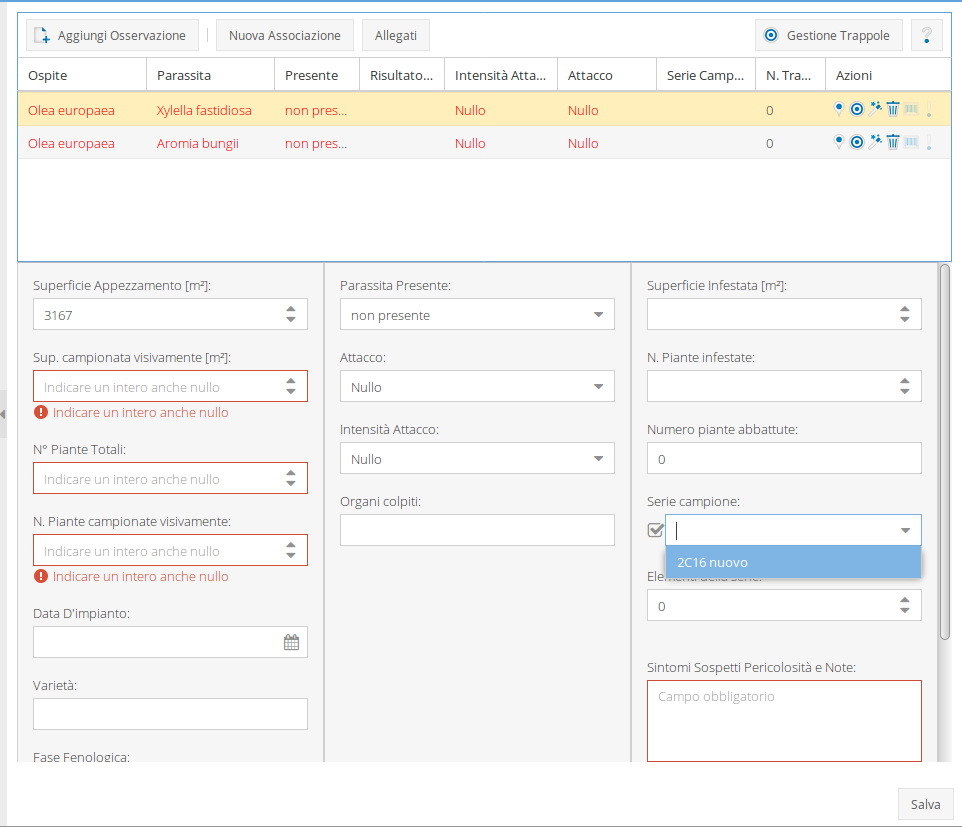
Nel caso in cui venisse prelevato un campione, al salvataggio dei dati dell'osservazione, il software chiederà a quale laboratorio verrà conferito per le analisi necessarie.
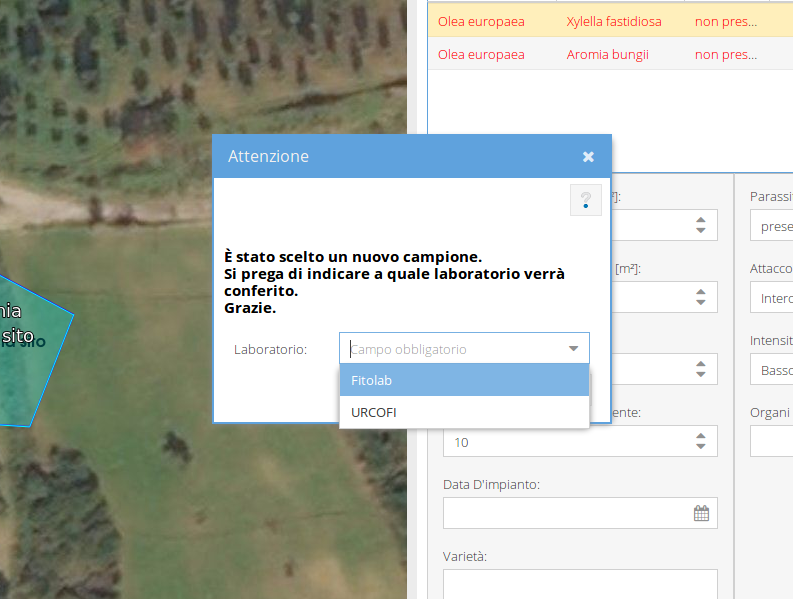
Le righe delle osservazioni completate diventano nere e, una volta completate tutte le osservazioni di una scheda, sarà possibile confermarla.
Le modifiche alle osservazioni saranno sempre possibili fin quando la scheda non sarà confermata. Il form di editazione delle osservazioni, per le schede confermate può essere usato solo per visualizzare i dettagli della singola osservazione ma non sarà più possibile modificare i dati inseriti.
Completata la prima osservazione, tutte le osservazioni caricate contestualmente alla prima, erediteranno i valori dei campi della prima colonna del form.
L'ultima colonna nella lista delle osservazioni da accesso a varie azioni, cliccando sull'azione corrispondente. Ogni azione è rappresentata da un'icona e, al passaggio del mouse, è possibile vedre un tooltip che ne descrive l'azione.
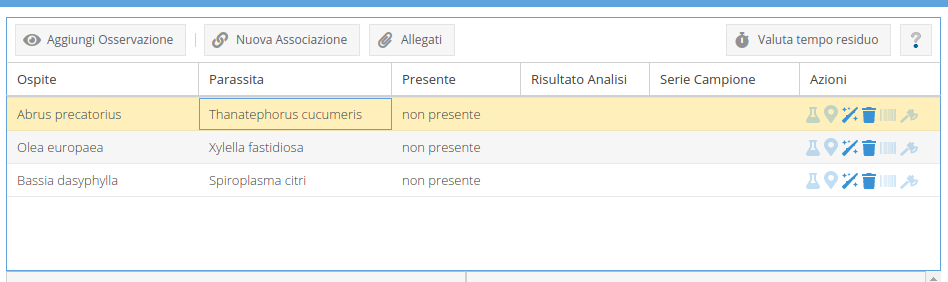
Le azioni possibili sono:
Selezionamdo un'osservazione e cliccando sull'icona disegna punto, il puntatore del mouse viene abilitato a disegnare un punto sulla mappa. Questa eventualità è evidenziata dal fatto che quando il puntatore è sulla mappa presenta un pallino blu sulla punta. A questo punto basta cliccare sulla posizione della mappa desiderata ed il pallino diventa giallo e resta fisso sulla mappa. Per salvare la posizione scelta basta cliccare sul tasto Salva nel form di editazione dell'osservazione.
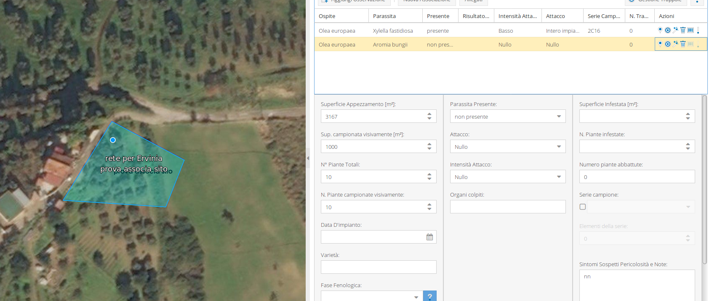
Selezionando le osservazioni per le quali è disegnato un punto, quest'ultimo comparira sulla mappa come un punto rosso con l'indicazione della coppia pianta parassita.
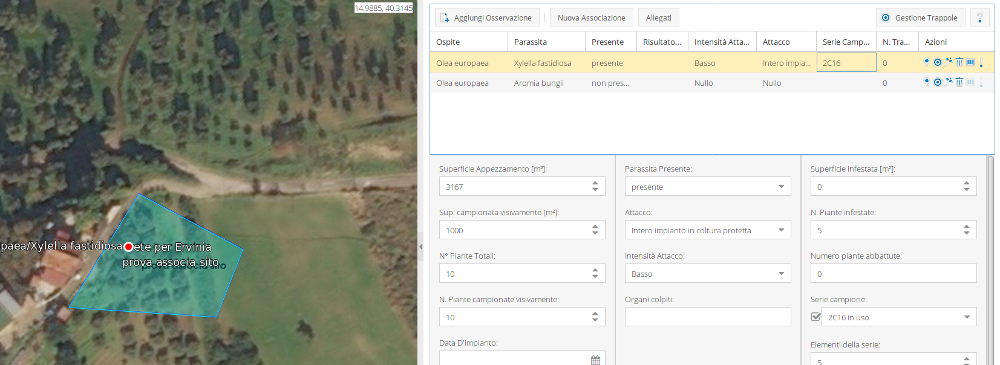
Il punto può essere modificato, semplicemnte, ridisegnandone un'altro.
Se l'osservazione ha evidenziato piante infestate sarà possibile, anche dopo che la scheda sarà confermata, registrare eventuali abbattimenti. Cliccando sul'icona abbattimenti, (l'ultima nella colonna delle azioni), verrà una finestra nella quale, mediante apposito form, potranno essere inserite numero di piante abbatute e la data dell'abbattimento. Nella parte superiore della finestra verranno visualizzati, eventualmente, interventi precedenti con il totale delle piante abbattute. Ovviamente non potrà essere registrato un numero di abbattimenti maggiori del numero di piante infestate registrate nella scheda.
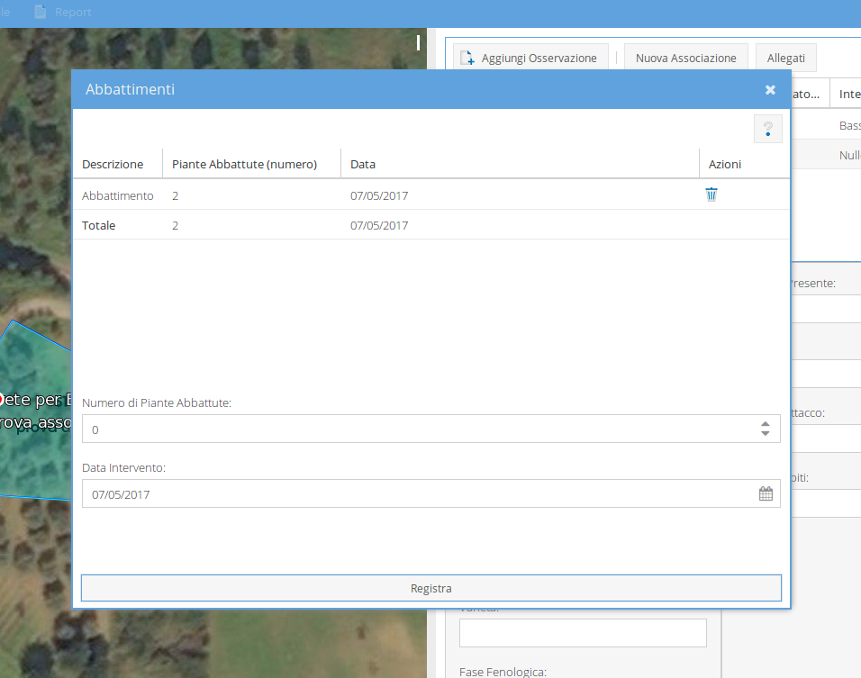